EQs, Filters and Dynamics
Cognate Kinetic Manual
Version v1.10 · 06/04/2026
EQs, Filters and Dynamics
Version v1.10 · 06/04/2026
| Category | EQs, Filters and Dynamics |
| Channels | Mono in / mono out |
| Version | 1.10 (06/04/2026) |
Cognate Kinetic is an envelope filter that works with you, not against you. It handles classic downward and upward funky and synthy sweeps with intelligent auto-sensitivity quietly solving the usual envelope-filter problem in the background: too sensitive in one room, unresponsive in the next, never the same twice. Kinetic stays predictable regardless of input level or playing dynamics, while still rewarding you when you dig in. Two filter circuits (multimode OTA and Moog ladder) cover everything from silky warm movement to tearing laser resonance, with drive, blend, and an LFO for when you want to go further.
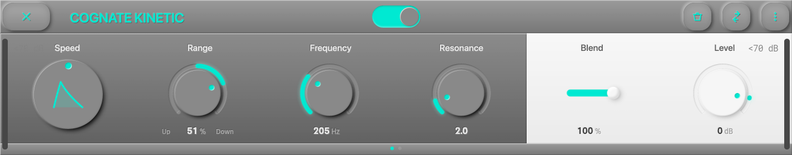
Page 1 of 2
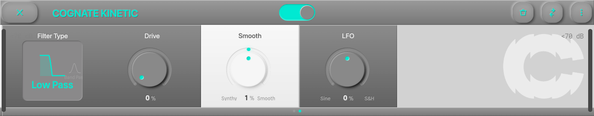
Page 2 of 2
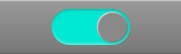
Turns off the envelope filter and passes your bass straight through to the next block. The plugin stays in your preset, so you can kick Kinetic in and out without reloading anything.
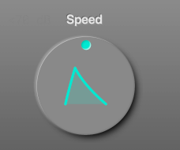
Morphs the envelope's character from smooth and flowing to snappy and zappy. At low settings the filter opens and closes gradually, following the broad shape of each note; at the top the envelope is sharp and instant, giving each note a fast transient "wow" that's great for percussive playing. Think of it as the single knob that separates funk from synth.
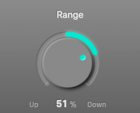
Direction and depth of the envelope sweep, in a single bipolar knob.
The magnitude controls how much the filter moves — small values for subtle dynamics, full values for dramatic sweeps.
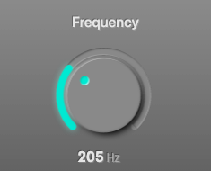
The base cutoff frequency of the filter — where it sits when the envelope isn't doing anything. Set this to the centre of where you want the sweep to live: Range moves the cutoff up or down from here. The default (200 Hz) puts you in classic low-mid funk territory; higher values shift the action into synth/wah territory.
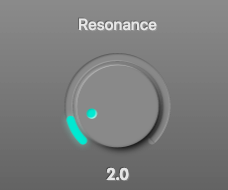
Emphasis at the filter cutoff. At low values the filter is gentle and transparent; push it up and a resonant peak develops around the cutoff, adding a vocal "wow" on downward sweeps and a laser-like bite on upward ones. On the Ladder filter type, high resonance starts to self-oscillate — the filter rings like a sine wave at the cutoff — which is the classic Moog sound. Back off if individual notes start feeding back on themselves.
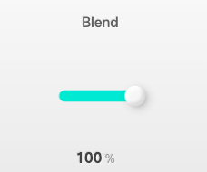
Wet/dry blend. At 100% you hear only the filtered signal; as you pull it back, the dry bass returns under the effect. Useful for keeping some low-end solidity under a heavy resonant setting — the dry carries the fundamentals while the wet layer adds the movement on top.
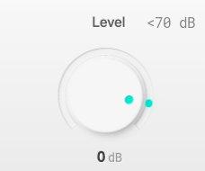
Output trim. High resonance and heavy drive can push the output loud, especially on sweeps that hit the cutoff peak — use Level to match the bypassed and engaged volumes so engaging the effect doesn't jump the mix.
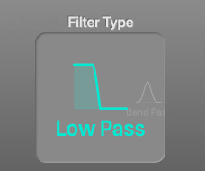
Two filter designs, four modes.
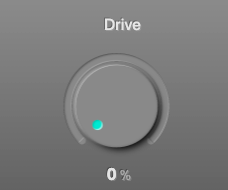
Saturation in the filter path. At 0% the filter is clean; as you push it, harmonics start to pile up on top of the filtered signal, giving each sweep a thicker, more aggressive tone. The OTA filters get warm and gritty; the Ladder filter develops that classic Moog overdrive. A little drive adds body; a lot turns Kinetic into a full synth-bass voice.

Bipolar shaping of the envelope's attack and release times around whatever Speed sets.
Use this when Speed alone isn't quite getting the feel right — it's the second axis of envelope shaping.

An extra low-frequency oscillator layered on top of the envelope, for when you want movement that isn't tied to your playing dynamics. Bipolar:
Works with the envelope, not instead of it: both modulations add to the filter cutoff, so you can combine dynamic response and automatic movement.